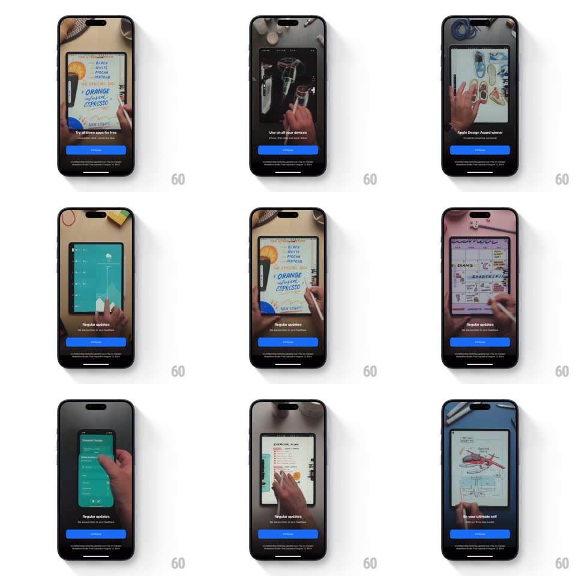

Media
Frame-by-frame

Rebuild this animation 1:1: Moleskine Planner's expired-trial paywall - a full-screen looping video of hands using the app plays behind crossfading marketing copy, with a fixed blue Continue button.

Rebuild this animation 1:1: Moleskine Planner's expired-trial paywall - a full-screen looping video of hands using the app plays behind crossfading marketing copy, with a fixed blue Continue button.
## Integration
Integration: stack-agnostic spec - springs given as stiffness/damping, timed motions as duration + curve; map every value to your framework and animation library of choice.
## Scene
Full-bleed vertical video: top-down shots of hands writing with a stylus, flipping planner pages, sketching, and using the apps on iPhone and iPad. Overlaid lower third: rotating copy ("Try all three apps for free", "Use on all your devices", "Apple Design Award winner", "Regular updates", "Be your ultimate self"), a blue "Continue" pill, and small trial-terms text.
## Motion spec
Pattern: video backdrop with crossfading copy, ~5s per copy beat.
- Video: loops continuously through the showcase clips with 500ms cross-dissolves between shots.
- Copy: each headline and subline pair crossfades (400ms) on a 4.5s rotation, timed to land just after each video cut.
- A subtle dark scrim (35%) sits between video and text, constant.
- Continue and the legal line are static throughout.
## Calibration
- Copy changes only on the beat - it never cuts mid-dissolve.
- The video fills the safe area edge to edge; no letterboxing.
## Reduced motion
A single still frame from the video with static copy.
## Don't miss
- The video shows real hands and real devices - product UI alone is not the same asset.
- The scrim stays flat; pulsing or gradient scrims break the readability contract.